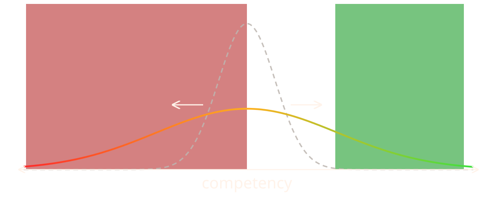
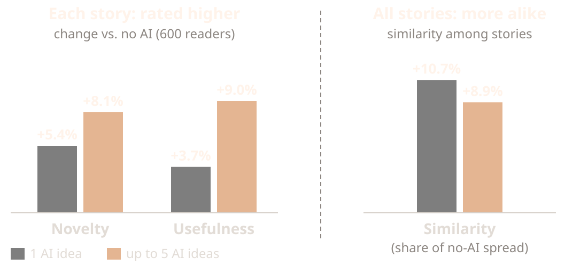
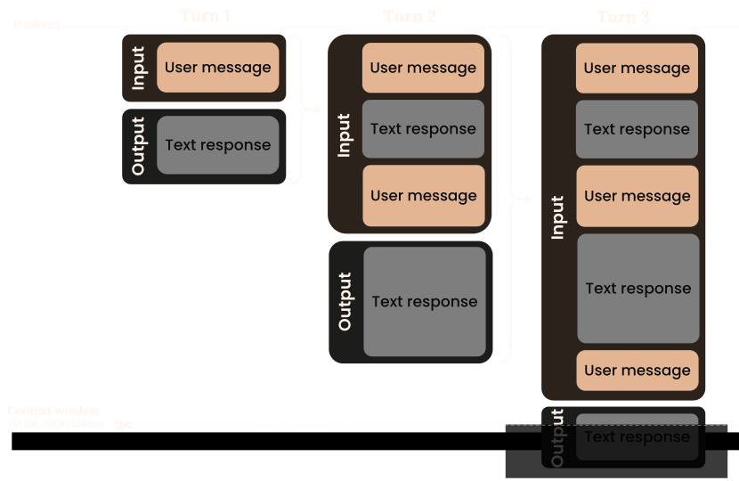
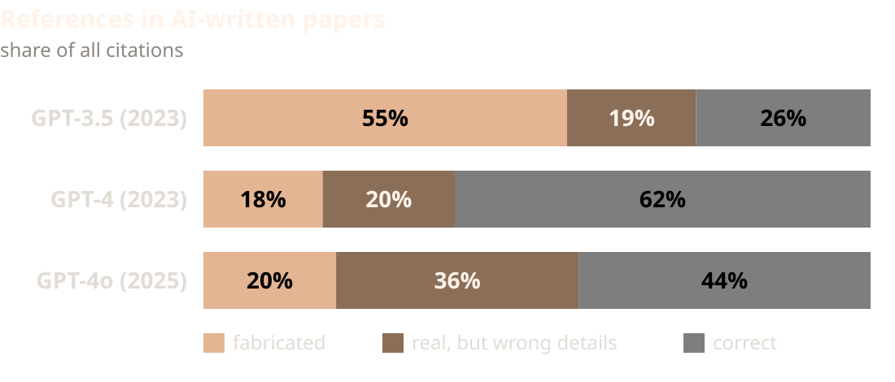

AI 에이전트와 함께 연구하기
대학원생을 위한 생성형 AI 활용

김경호 · 한국환경연구원(KEI)
전남대학교 문화전문대학원 · 2026년 10월
오늘 다룰 것
오늘 다룰 것: AI 에이전트를 연구의 조수로 쓰기 위한 세 가지 질문.
1원리AI는 어떻게 작동하고, 에이전트는 무엇이 다른가
2주의어디서 틀리고, 어떻게 확인하는가
3활용연구에 어떻게 쓰고, 무엇을 밝히는가
용어(Terms)
| 용어 | 뜻 |
|---|
| LLM(대규모 언어 모델) | 방대한 글을 학습해 다음 말을 예측하며 글을 만드는 AI 모델 |
| 토큰(Token) | 모델이 글을 나눠 처리하는 단위(단어나 그 일부) |
| 프롬프트(Prompt) | AI에게 주는 질문이나 지시 |
| 컨텍스트(Context) | 답을 만들 때 AI가 함께 보는 글 전체(대화, 올린 파일 등) |
| 터미널(Terminal) | 마우스 대신 글자로 명령을 입력해 컴퓨터를 다루는 창 |
| CLI(명령줄 인터페이스) | 터미널에서 명령어로 프로그램을 쓰는 방식(예: Claude Code, Codex) |
| 마크다운(Markdown) | # 제목, - 목록처럼 기호로 서식을 적는 간단한 글 형식 |
| HTML | 웹 페이지를 만드는 언어. AI가 표·도식·화면을 만들어 보여 줄 때 쓴다 |
전제(Premises)
전제: AI를 사용할 때 받아들이고 있는 세 가지 믿음.
비판: LLM은 의미 없이 다음 단어만 잇는 확률론적 앵무새다
→ 사람의 뇌도 다음 말을 예측한다.
언어 모델은 뇌와 부분적으로 닮았다.
비판: AI를 쓰면 사고력과 추론 능력이 떨어진다
→ AI는 증폭기다. 생각을 맡기면 줄고,
생각을 넓히는 데 쓰면 는다.
비판: AI는 평균적인 결과물만 만든다
→ AI는 평균 이상의 초안을 모두에게 비슷하게 준다.
완성은 사람이 한다.

AI는 예측으로 돕고, 사람은 판단으로 완성한다.
도구는 같아도, 쓰는 방식이 결과를 가른다.
획일화(Homogenization)
획일화: AI 도움을 받은 글이 각각은 나아지지만 서로 비슷해지는 현상.
AI 아이디어를 받아 쓴 이야기는
더 새롭고 쓸모 있다는 평가를 받았다.
원래 창의성이 낮은 사람일수록 컸다.
그러나 AI 도움을 받은 이야기들은
서로 더 비슷해졌다.
AI는 평균 이상의 초안을 모두에게
비슷하게 준다. 무엇을 남기고 고칠지
판단하는 것이 사람의 몫이다.
※ 실험: 293명이 8문장 이야기를 쓰고
600명이 평가, AI 아이디어 0·1·5개

LLM(Large Language Model)
LLM: 방대한 글을 학습해, 앞의 글을 보고 다음 말을 예측하며 이어 쓰는 모델.
LLM은 수많은 글에서 다음 단어
맞히기를 반복하며 언어의 패턴과
지식을 익힌다.
입력된 글을 보고 다음 말의 확률을
계산해 하나를 출력한다. 출력은 다시
입력에 붙어 다음 예측에 쓰인다.
그래서 그럴듯한 글을 잘 쓴다. 다만
그럴듯함이 곧 사실은 아니다.
※ 자기회귀(Autoregressive): 자기가 낸
출력을 다시 입력으로 받아 다음을
예측하는 방식

입력으로 다음 말의 확률을 계산해 출력, 출력은 다시 입력이 되어 반복(수치는 예시)
컨텍스트(Context)
컨텍스트: LLM이 출력을 생성할 때 참조하는 토큰의 집합.
입력과 지금까지 생성한 출력을
모두 포함한다.
내가 쓴 질문, 올린 파일, AI가 앞서 한
답이 모두 컨텍스트에 들어간다.
학습 데이터가 아니라, 이번 호출에
넣어 준 토큰만 본다.
※ 토큰(Token): 모델이 처리하는
최소 단위 (영어 약 3.5자 = 1토큰)

턴마다 입력·출력 누적, 컨텍스트 증가
컨텍스트 엔지니어링(Context engineering)
컨텍스트 엔지니어링: AI가 볼 정보를 골라 넣고, 필요 없는 것은 빼는 일.
적어 두기(Write)연구 목적·용어·규칙을 문서로 만들어 매번 함께 준다
골라 주기(Select)지금 작업에 필요한 논문과 자료만 올린다
줄이기(Compress)대화가 길어지면 요약을 받아 새 대화에서 이어 간다
나누기(Isolate)주제가 다르면 대화나 프로젝트를 따로 연다
많이 넣을수록 좋은 것이 아니라, 관련 있는 것만 넣을수록 좋다.
검증(Verification)
검증: AI의 결과는 그럴듯해도 틀릴 수 있으므로, 사람이 직접 확인해야 한다.
AI가 쓴 글의 참고문헌을 확인하니
상당수가 없는 논문이거나, 저자·연도·
쪽수가 틀렸다.
최신 모델도 다섯 중 하나를 지어냈고,
낯설고 좁은 주제일수록 더 많았다.
틀린 인용도 형식은 그럴듯해서,
읽기만 해서는 알아채기 어렵다.
※ 검증 방법: 인용은 원문에서 직접
찾아 대조하고, 수정은 바뀐 부분만
표시하게 해 하나씩 확인한다.

AI가 쓴 글의 참고문헌 중 지어낸 것과 정보가 틀린 것의 비율
논문 작성 단계별 활용(Writing workflow)
논문 작성 단계별 활용: 단계마다 AI에 맡길 것과 내가 직접 할 것을 나누는 것.
| 단계 | AI에 맡길 것 | 내가 할 것 |
|---|
| 주제 설정 | 질문 다듬기, 예상 반론 받아 보기 | 연구 질문을 정한다 |
| 문헌 검토 | 논문 요약, 쟁점·입장 정리 | 원문을 읽고 인용 부분을 대조한다 |
| 구성 | 목차 검토, 논리의 빈틈 지적 | 주장과 순서를 정한다 |
| 초안 | 내가 쓴 초안에 대한 비판 | 초안은 직접 쓴다 |
| 교정 | 문장 다듬기, 용어·표기 일관성 | 수정안을 골라 받아들인다 |
| 인용 확인 | 본문 인용과 참고문헌 목록 대조 | 모든 출처를 원문으로 확인한다 |
AI에 무엇을 맡겼는지는 기록해 두고, 논문에 밝힌다.
AI 사용 공개(AI disclosure)
AI 사용 공개: 어떤 AI를 어디에 어떻게 썼는지 논문에 밝히는 일.
전남대 글쓰기 과제 가이드(2025.9)는
사실 검증, 사용 사실 공개, 대화
기록 보관을 요구한다.
교육부·한국연구재단 가이드(2026.6)는
대학원생을 포함한 연구자에게
책임 있는 사용 준칙 10가지를 둔다.
주요 학술지는 모두 AI를 저자로
인정하지 않고, 내용과 인용의
책임은 사람에게 있다고 명시한다.
학위논문은 학과·지도교수 지침과
투고할 학술지 규정을 먼저 확인한다.
| 원칙 | 근거 |
|---|
| AI는 저자가 될 수 없다 | 한국연구재단, COPE, ICMJE, Elsevier, Nature |
| 내용·인용의 책임은 나에게 | 한국연구재단, ICMJE, Elsevier, 전남대 |
| 어디에 어떻게 썼는지 공개·기록 | 한국연구재단, COPE, ICMJE, 전남대 |
| 미공개 데이터·개인정보는 넣지 않기 | 한국연구재단, 전남대 정보화본부, Nature, Elsevier |
| 내 학교·학술지 규정 먼저 확인 | 한국연구재단, 전남대(수업계획서) |
정리
정리: AI는 연구의 조수다. 판단과 완성은 내가 한다.
1자료를 준다내 논문과 문헌을 줄수록 답이 정확해진다
2먼저 쓴다초안은 내가 쓰고, AI에게 비판받는다
3원문으로 확인한다인용과 사실은 반드시 원문과 대조한다
4기록하고 밝힌다AI를 어디에 썼는지 남기고, 논문에 공개한다